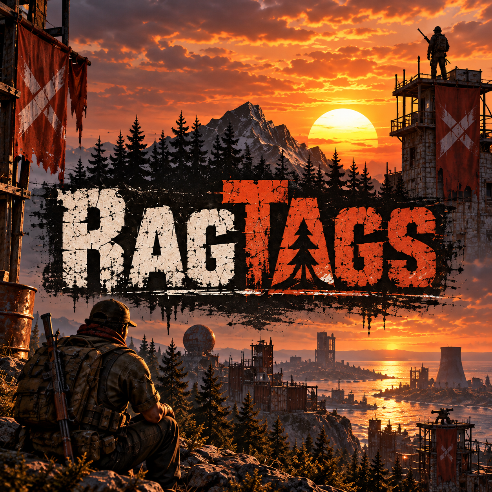

AU/NZ low-pop Rust for working people, dads and casual players. Peaceful play earns faster progression, cheaper upkeep and stronger protection. Aggression is allowed — it just has consequences.
Week 1 protects casual players, the middle of wipe is reputation-driven, and the final 24 hours are full Purge.
client.connect 165.99.241.124:28080
Team gameplay bonuses use the team's lowest current member. Blueprint carryover is different: that uses each player's own personal rep.
Only offensive kills are penalised. Valid self-defence is free.
Sleeper kills carry a larger reputation penalty.
Applied once per normal raid session. Valid retaliation is reduced.
Destroying an enemy Tool Cupboard carries an extra hit.
Gather, sulfur and upkeep all return to normal 1× values during Purge.
| Team rep | Rate |
|---|---|
| 0–59 | 1× |
| 60–89 | 2× |
| 90–100 | 3× |
| Purge | 1× |
| Team rep | Rate |
|---|---|
| 0–49 | 0.5× |
| 50–89 | 1× |
| 90–100 | 2× |
| Purge | 1× |
| Team rep | Upkeep |
|---|---|
| 0–20 | 1.5× |
| 21–70 | 1× |
| 71–100 | 0.5× |
| Purge | 1× |
The plugin also has a fail-safe: if the real snapshot is missing, it skips the BP wipe rather than wiping everyone by mistake.
Purge automatically begins 24 hours before Rust's official monthly wipe timer.
After the whole team has been offline for 10 minutes, the base is hard protected. Raiders also lose their own ORP eligibility for 6 hours.
Hard ORP ends. Reputation-based online/offline damage scaling takes over, so good rep gives stronger protection and bad rep gives weaker protection.
ORP is disabled and all reputation defence modifiers return to normal 1× values for the final 24 hours.
These answers reflect the current live ruleset and plugin setup.
The map follows Rust's official monthly force-wipe schedule: the first Thursday of each month at 19:00 Europe/London.
Purge starts automatically exactly 24 hours before the official monthly wipe.
Anything goes. Gather, sulfur and upkeep return to 1×, raid damage returns to normal 1×, ORP is disabled and reputation penalties are suspended.
No. Your BP carryover is locked at the instant automatic Purge begins. What you do during Purge cannot change that result.
Have at least 71 personal reputation when automatic Purge starts. At 71+, your learned personal BPs carry into the next wipe.
You do not qualify for BP carryover. Your learned personal BPs will reset at the map wipe.
No. Gameplay bonuses use the team's lowest member, but BP carryover uses your own personal reputation.
Use /bpstatus. Before Purge it shows your current personal rep and pending status. After the snapshot it shows whether carryover is locked as eligible.
The team uses the lowest current member's reputation for gather, sulfur, upkeep and reputation-based protection.
Players start at 60 reputation.
You need at least 30 active peaceful minutes to qualify for a recovery award. Recovery does not happen passively while you are offline.
The current recovery curve is +5 / +4 / +3 / +2 / +1 depending on your reputation band, with one recovery cycle per 24 hours.
An offensive player kill costs 7 reputation. Valid self-defence does not cost reputation.
A sleeper kill costs 10 reputation unless the target is covered by a specific exception such as Wanted handling.
If the other side initiates hostile PvP, you get a 10-minute self-defence window against that team. Defensive kills within that context cost 0 reputation.
Yes. Raid defence is penalty-free during the active raid and remains protected for 15 minutes after the last hostile structure hit.
Yes. You get a 24-hour retaliation window against the original aggressor's team. A valid retaliation raid costs 5 reputation instead of the normal 18.
Raiders become Wanted for 6 hours. Wanted also reduces their effective gathering benefits.
For the first 7 days of the wipe, a base becomes hard protected after the team has been offline for 10 minutes.
Hard offline protection ends. Offline raiding is enabled and reputation-based damage protection becomes the relevant defence system.
0–59 rep = 1×, 60–89 = 2×, 90–100 = 3×. Purge = 1×.
0–49 rep = 0.5×, 50–89 = 1×, 90–100 = 2×. Purge = 1×.
0–20 team rep = 1.5× upkeep, 21–70 = 1×, 71–100 = 0.5×. Purge returns upkeep to 1×.
No. Gather Manager was removed so it cannot stack multipliers on top of the RagTags reputation system.
Blueprint Share is installed. Team blueprint sharing is enabled according to the server's configured Blueprint Share rules.
Reputation resets to the configured starting value of 60 when the new map wipe begins.
No. There is no passive offline reputation regeneration. You need active peaceful play time.
Not globally. Gather rates are reputation-based. A 60–89 team effectively gets 2× general gather, but lower and higher bands differ.
Sulfur is deliberately more restricted so high reputation helps progression without making raiding resources scale too aggressively.
Low-pop AU/NZ players who want monthly progression, especially working people, dads and casual teams who cannot be online constantly.